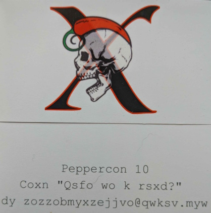
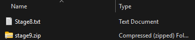

| Even though the Peppercon-X contest is over, some people may still be interested in knowing what the puzzles and their solutions were... |
So welcome to the unofficial Peppercon-X write-up.
|
|  |
 |
| |
|
Step 1: "The Card"
|
| Raw Text: | Peppercon 10 - Coxn "Qsfo wo k rsxd?" dy zozzobmyxzejjvo@qwksv.myw |
| Method: | ROT-16 (Reverse of ROT-10) |
| Output: | Peppercon 10 - SEND "GIVE ME A HINT?" TO PEPPERCONPUZZLE@GMAIL.COM |
| Note: | After sending the email, an automated response is returned. HEX_DUMP |
|
| |
|
Step 2: "Hex Dump"
|
| Raw Text: | HEX_DUMP |
| Method: | Analyze HEX Dump for clarity. Many tools can do this, but I used CyberChef.io |
| Note: | Reviewing the data, this appears to be a: Microsoft Office 2007+ document Extension: docx, which I happen to know is also a container type. |
| Method Cont.: | Take the HEX data and save it as a .docx type. I used the HEX values, not the text, and pasted it into the HxD Hex editor and saved. |
|
| |
|
Step 3: "Word Document Exploration"
|
| Text (Top): | |
| Hidden Text (Bottom): | |
| Method: | Text was white on white, change it to something else to see it... |
| Method Cont.: | Next, change the type of the document file to a .zip and review container contents... |
| Contents: | |
|
| |
|
Step 4: "stage2.zip"
|
| Contents: |  |
| Method: | Password protected. This one is easy, you can use a brute force attack or just guess "password". |
| References: | https://en.wikipedia.org/wiki/List_of_the_most_common_passwords |
| References Cont.: | You could also use something like fcrackzip:
|
| Contents of Stage2.txt: | "Nothing to see here. Maybe look somewhere else." |
| Note: | The most likely "somewhere else" is going to be the stage3.zip file... |
| Review of stage3.zip HEX (very bottom): | |
|
| |
|
Step 5: "stage3.zip"
|
| Contents: | |
| Method: | Password protected. "i've got no strings on me" |
| Contents of Stage3.txt: | /-\ /_ \ /_\ /_ \ /=\ _\ _ /=\ _\ _ /-\ /\ _ /-\ _\ \ /_\ /\ \ /_\ /\ _ /-\ _\ / /-\ /\ _ /_\ /\ _ /-\ _\ / /-\ /\ _ /_\ /\ / /_\ /_ \ /-\ _\ \ /-\ _\ \ /_\ /\ _ /=\ /_ \ /_\ /\ / /-\ /\ _ /_\ /_ _ /-\ _\ _ /=\ /_ \ /-\ /\ _ /=\ /_ \ /=\ /_ _ /-\ /_ \ /-\ /\ _ /-\ _\ \ /_\ /\ _ /=\ /_ / /_\ /_ \ /-\ /\ _ /_\ /_ _ /=\ /_ _ /=\ /\ _ /-\ /\ _ /-\ _\ / /=\ /_ _ /=\ /_ / /_\ /_ \ /-\ /\ _ /=\ _\ / /_\ /_ \ /=\ /_ _ /=\ /\ / /_\ _\ / /=\ /\ _ /_\ /_ / /-\ /\ / /-\ /\ _ /-\ _\ \ /_\ /\ \ /_\ /\ _ /-\ _\ / /-\ /\ _ /-\ _\ / /_\ /_ \ /=\ /\ _ /-\ /_ / /_\ /\ _ /_\ _\ _ /_\ /_ \ /-\ /\ _ /_\ /\ _ /-\ _\ / /-\ /\ _ /_\ _\ / /-\ _\ / /-\ _\ / /_\ /\ _ /_\ /\ / /=\ /_ \ /_\ /_ \ /_\ /_ / /-\ /\ _ /-\ _\ \ /=\ /_ _ /-\ /\ _ /=\ /\ _ /-\ _\ _ /=\ /_ \ /-\ /\ _ /=\ /_ _ /=\ /_ \ /-\ /\ _ /=\ /\ / /=\ /_ _ /=\ /\ _ /-\ _\ \ /-\ /\ _ /_\ /_ _ /=\ /_ _ /=\ /\ _ /-\ _\ \ /-\ /\ / /-\ /\ _ /-\ _\ \ /_\ /\ \ /=\ /\ _ /_\ /_ \ /_\ /_ \ |
| Note: | Looks like some text triangles double spaced gaps between 8 character values... Likely a substitution cipher.
There might be a method to the symbols, but a mono-alphabetic sub is a mono-alphabetic sub. |
| Reformatted, simplified character set defined to help with decipher tool input: |
/-\ /_ \ A
/_\ /_ \ B
/=\ _\ _ C
/=\ _\ _ C
/-\ /\ _ D
/-\ _\ \ E
/_\ /\ \ F
/_\ /\ _ G
/-\ _\ / H
/-\ /\ _ D
/_\ /\ _ G
/-\ _\ / H
/-\ /\ _ D
/_\ /\ / I
/_\ /_ \ B
/-\ _\ \ E
/-\ _\ \ E
/_\ /\ _ G
/=\ /_ \ J
/_\ /\ / I
/-\ /\ _ D
/_\ /_ _ K
/-\ _\ _ L
/=\ /_ \ J
/-\ /\ _ D
/=\ /_ \ J
/=\ /_ _ M
/-\ /_ \ A
/-\ /\ _ D
/-\ _\ \ E
/_\ /\ _ G
/=\ /_ / N
/_\ /_ \ B
/-\ /\ _ D
/_\ /_ _ K
/=\ /_ _ M
/=\ /\ _ O
/-\ /\ _ D
/-\ _\ / H
/=\ /_ _ M
/=\ /_ / N
/_\ /_ \ B
/-\ /\ _ D
/=\ _\ / P
/_\ /_ \ B
/=\ /_ _ M
/=\ /\ / Q
/_\ _\ / R
/=\ /\ _ O
/_\ /_ / S
/-\ /\ / T
/-\ /\ _ D
/-\ _\ \ E
/_\ /\ \ F
/_\ /\ _ G
/-\ _\ / H
/-\ /\ _ D
/-\ _\ / H
/_\ /_ \ B
/=\ /\ _ O
/-\ /_ / U
/_\ /\ _ G
/_\ _\ _ V
/_\ /_ \ B
/-\ /\ _ D
/_\ /\ _ G
/-\ _\ / H
/-\ /\ _ D
/_\ _\ / R
/-\ _\ / H
/-\ _\ / H
/_\ /\ _ G
/_\ /\ / I
/=\ /_ \ J
/_\ /_ \ B
/_\ /_ / S
/-\ /\ _ D
/-\ _\ \ E
/=\ /_ _ M
/-\ /\ _ D
/=\ /\ _ O
/-\ _\ _ L
/=\ /_ \ J
/-\ /\ _ D
/=\ /_ _ M
/=\ /_ \ J
/-\ /\ _ D
/=\ /\ / Q
/=\ /_ _ M
/=\ /\ _ O
/-\ _\ \ E
/-\ /\ _ D
/_\ /_ _ K
/=\ /_ _ M
/=\ /\ _ O
/-\ _\ \ E
/-\ /\ / T
/-\ /\ _ D
/-\ _\ \ E
/_\ /\ \ F
/=\ /\ _ O
/_\ /_ \ B
/_\ /_ \ B
|
| Condensed: | ABCCDEFGHDGHDIBEEGJIDKLJDJMADEGNBDKMODHMNBDPBMQROSTDEFGHDHBOUGVBDGHDRHHGIJBSDEMDOLJDMJDQMOEDKMOETDEFOBB |
| Character analysis: | |
| Assuming "D" is a space: | ABCC EFGH GH IBEEGJI KLJ JMA EGNB KMO HMNB PBMQROST EFGH HBOUGVB GH RHHGIJBS EM OLJ MJ QMOE KMOET EFOBB |
| Solution: | WELL THIS IS GETTING FUN NOW TIME FOR SOME JEOPARDY THIS SERVICE IS ASSIGNED TO RUN ON PORT FORTY THREE |
| Substitution solver used: | quipqiup.com |
| Solve: | WHOIS protocol runs on Port 43. For the sake of JEOPARDY, the answer would be "what is whois?" haha nice! |
|
| |
|
Step 6: "stage4.zip"
|
| Contents: | |
| Method 1: | Password protected. "what is whois?" |
| Contents of Stage4.txt: | Stage4.txt |
| Note: | This puzzle is baccarat themed. We are given a "history board" and a series of hands played... |
| Note: | The history board reads:
RB RR BBR RR G BBB RRR G BBB BBR RRR RRR G RRR BBR RB BBB RRB G BR RRB BBR RBR BR |
| Thoughts: | This one seemed to be stumping most. One hint that was provided was "history is not always written by the winners". Based on this, I eventually started assuming that the
"history board" outranked the actual hands' winners/losers. I let that "drive" which hand was the one to reference... At that point, the next stage is figuring out how the scoring works in baccarat. |
| Scoring Note: | "Each card has a point value. Tens, Jacks, Queens, and Kings count as a zero. Aces count as 1, 2s count as 2, 3s count as 3, etc." The values are essentially MOD 10, so we only need to keep the ONES place. See Blue/Red columns below for actual values. |
Scores by hand, with choice isolated.
Blue = Player
Red = Bank
Green = Tie: |
PLAYER BANK BLUE RED CHOSEN
P:♠5♥2 B:♣J♦6 P: 7 [B: 6] R 6
P:♥3♥A♣2 B:♦10♣7 [P: 6] B: 7 B 6
P:♠3♠5 B:♥2♠7 P: 8 [B: 9] R 9
P:♠K♥8 B:♥3♦4 P: 8 [B: 7] R 7
P:♣2♦2♠5 B:♥3♣8♣A [P: 9] B: 2 B 9
P:♠J♥9 B:♣2♣6 [P: 9] B: 8 B 9
P:♣10♣Q♠5 B:♥5♥6♠Q P: 5 [B: 1] R 1
P:♣7♥9 B:♠K♥10♣10 P: 6 [B: 0] R 0
P:♦3♣J♦2 B:♣7♦J P: 5 [B: 7] R 7
P:♦2♣7 B:♠10♠9 [P: 9] [B: 9] G
P:♣4♠7♠K B:♣8♦10 [P: 1] B: 8 B 1
P:♠A♥K♣10 B:♠4♠K♣K [P: 1] B: 4 B 1
P:♣6♠5♦J B:♣9♥K [P: 1] B: 9 B 1
P:♣A♣7 B:♦3♦8♠Q P: 8 [B: 1] R 1
P:♦10♦6 B:♥J♥K♣J P: 6 [B: 0] R 0
P:♠3♠9♥J B:♣A♦3♠8 P: 2 [B: 2] R 2
P:♥9♦5♠2 B:♥10♥6 [P: 6] [B: 6] G
P:♥3♥2♦6 B:♥6♣6♥7 [P: 1] B: 9 B 1
P:♦4♦A♥6 B:♠10♣8 [P: 1] B: 8 B 1
P:♠A♥A♠4 B:♣J♣3♥2 [P: 6] B: 5 B 6
P:♠10♥A♥J B:♣5♣4 [P: 1] B: 9 B 1
P:♠6♠4♥K B:♣K♣10♣8 [P: 0] B: 8 B 0
P:♦7♣6♣8 B:♥7♦5♣2 P: 1 [B: 4] R 4
P:♣A♣8 B:♣5♠5♠A P: 9 [B: 1] R 1
P:♠6♣4♦5 B:♣5♠5♠J P: 6 [B: 0] R 0
P:♠10♠8 B:♣7♠4♥4 P: 8 [B: 5] R 5
P:♣2♣6 B:♠K♠Q♥A P: 8 [B: 1] R 1
P:♥3♣8♣A B:♦3♣2♦6 P: 2 [B: 1] R 1
P:♥10♥6 B:♠10♥5♦J P: 6 [B: 5] R 5
P:♦5♦4 B:♥6♣3 [P: 9] [B: 9] G
P:♦5♥3 B:♦6♣5♥10 P: 8 [B: 1] R 1
P:♣J♥9 B:♥4♣2♥6 P: 9 [B: 2] R 2
P:♦Q♦A♣5 B:♠3♠9♥9 P: 6 [B: 1] R 1
P:♠7♥6♦8 B:♥7♥K [P: 1] B: 7 B 1
P:♠2♠A♣7 B:♠8♣A [P: 0] B: 9 B 0
P:♠5♥6♣6 B:♦Q♣10♦A P: 7 [B: 1] R 1
P:♥10♣8 B:♥5♥4 P: 8 [B: 9] R 9
P:♠9♠3♥5 B:♦Q♣5 [P: 7] B: 5 B 7
P:♣9♣6♦6 B:♦A♦7 [P: 1] B: 8 B 1
P:♣J♦A♠10 B:♠6♥3 [P: 1] B: 9 B 1
P:♣2♦A♠A B:♣4♦4 [P: 4] B: 8 B 4
P:♣4♦4 B:♠6♥5♠K P: 8 [B: 1] R 1
P:♠5♥J♣J B:♦7♦3♠A P: 5 [B: 1] R 1
P:♦4♠8♣3 B:♣K♦J♦10 [P: 5] B: 0 B 5
P:♠8♥A B:♣5♦4 [P: 9] [B: 9] G
P:♠10♠9 B:♣8♦10 [P: 9] B: 8 B 9
P:♦A♣4♦3 B:♥7♠2 P: 8 [B: 9] R 9
P:♠5♠2 B:♠10♥2♦9 P: 7 [B: 1] R 1
P:♣6♣Q B:♣K♦K♠Q P: 6 [B: 0] R 0
P:♥9♠2♥3 B:♠9♥J [P: 4] B: 9 B 4
P:♠10♥10♣A B:♥3♣3♦3 [P: 1] B: 9 B 1
P:♣7♥3♠Q B:♠J♥7 [P: 0] B: 7 B 0
P:♣Q♠7 B:♥2♦10♠3 P: 7 [B: 5] R 5
P:♥A♦8 B:♠8♥3♠10 P: 9 [B: 1] R 1
P:♣9♣A♦A B:♥6♠4♥8 [P: 1] B: 8 B 1
P:♠3♠Q♦6 B:♠7♠9♠6 P: 9 [B: 2] R 2
P:♠2♥2♣2 B:♣K♦A♦K [P: 6] B: 1 B 6
P:♠9♥4♦5 B:♣3♣J♠Q P: 8 [B: 3] R 3
|
| Condensed & parsed: |
66 97 99 107
111 102
116 104 105 115
121 101 97 114 115
99 104 105 112 63
|
| Method: | Decimal > ASCII |
| Site used: | https://www.asciitohex.com/ |
| Result: | Back of this years chip? |
| Solution: | (Remember the poker chip image at the top? Let's use the text around the outside.) "decima concentio piperis" |
|
| |
|
Step 7: "stage5.zip"
|
| Contents: | |
| Method 1: | Password protected. "decima concentio piperis" |
| Contents of Stage5.txt: | Stage5.txt |
| Thoughts: | After looking at this for a bit, it should stand out that this is music related. If you search for the text "X: 1 M: 4/4 L: 1/8 Q: 115 K: Em V: 1"
you will likely find that this is "a tune header written in ABC notation, a text-based format for representing musical scores. It defines the metadata and initial settings for a piece of music." |
| Note: | You can go to a site like https://notabc.app/abc-converter/ and see if you recognize the song. |
| Note 2: | You might recognize the song, or you can try apps like Shazam. I did not have any luck with it myself. I ended up searching for some of the notes:
I manually translated these as "dbagegd egd"
Doing a websearch for "dbagegd egd" brought up a "Binks Sake" on Tin Whistle post.
|
|
| |
|
Step 8: "stage6.zip"
|
| Contents: | |
| Method 1: | Password protected. "binks sake" |
| Contents of Stage6.txt: | Stage6.txt |
| Note: | At first glance this is a snowflake ascii art pattern. If you select the text, you'll see that there is also a bunch of whitespace at the end of the lines... |
| Method: | SNOW Cipher - "SNOW exploits the Steganographic Nature Of Whitespace. SNOW is used to conceal messages in ASCII text by appending whitespace to the end of lines. Because spaces and tabs are generally not visible in text viewers, the message is effectively hidden from casual observers." |
| Tool Used: | I used "stegsnow" in a Kali distro:
"$ stegsnow Stage6.txt" |
| Result: | Track #6 from Black Sabbath's album Vol. 4. RIP Ozzy. |
| Answer: | snowblind |
|
| |
|
Step 9: "stage7.zip"
|
| Contents: | |
| Method 1: | Password protected. "snowblind" |
| Contents of Stage7.txt: | Stage7.txt |
| Note: | Appears to be a poem titled "Ashes of the Burning Fruit"; I'm not seeing any acrostics or other clues. Checking the .zip |
| Text at the end of the stage8.zip via Hex editor review: | [Let Spiciness Reign: 2271 6126 1253 4383 4231 1365 3162 6354 7254 3322 4131 1454 2411 4244 3131 4361 1455 3261 5122 1113 2321 3442 5373 2346 7232 5375 6134 1454 4343 2345 3125 6121 1426 3241 4231 6256 6263 6342 2333 6221 1341 1375 3334 5463 2411 1162] |
| Note: | Seems like a book/Ottendorf cipher. For example: 2271 = 2nd paragraph 2nd line 7th word 1st letter. |
| Solution: | nzrevpn nhgrbebsubeebesnagnflnaqfpvraprsvpgvba |
| ROT-13 (Always ROT to be sure): | AMERICA AUTEOROFHORRORFANTASYANDSCIENCEFICTION |
| Respaced: | AMERICA AUTEOR OF HORROR FANTASY AND SCIENCE FICTION |
| Corrected?: | AMERICAN AUTHOR OF HORROR FANTASY AND SCIENCE FICTION |
| Note: | Needs research and various options to be tried within the category... |
| Answer: | h.p. lovecraft |
|
| |
|
Step 10: "stage8.zip"
|
| Contents: |  |
| Method 1: | Password protected. "h.p. lovecraft" |
| Contents of Stage8.txt: | Stage8.txt |
| Note: | Looks like base 64 text to me. |
| Method: | B64 > ASCII |
| Site used: | https://www.asciitohex.com/ |
| Result: | Looks like some sort of image svg format created in "inkscape", but there is the text:
"Capsaicinum est via vitae"
and some morse code:
. .- . -.- .. -.- .-- ..- / .--. --- -..- -..- .- --- ...- --.. / --- .- / -... .- . / --. -.-. .-. -.. -.. .. ...- -.-. / --.. .-. ..- -... .. .--- |
| Method: | Morse to text: |
| Converted: | EAEKIKWU POXXAOVZ OA BAE GCRDDIVC ZRUBIJ |
| Method: | Vigenere cipher with key "Capsaicinum est via vitae": |
| Converted: | CAPSICUM CULTIVAR OF THE CAROLINA REAPER |
| Note: | If nothing makes sense using a ROT, and you are given a potential key, always try vigenere, beaufort, etc... |
| Info: | CAROLINA REAPER |
| Solution: | capsicum chinense |
|
| |
|
Step 11: "stage9.zip"
|
| Contents: | |
| Method 1: | Password protected. "capsicum chinense" |
| Contents of Stage9.txt: | Stage9.txt |
| Note: | Looks like we have Heck seven times, Heckseven? And also (x|?) which suggest X or ? maybe XOR... |
| Site used: | https://www.dcode.fr/xor-cipher |
| Note: | So there is an option for "Use the Hexadecimal key", the default is "7F" let's try "07" instead! |
| Result: | https://www.youtube.com/watch?v=te7DuE2vfUM Title of the stream.lower() |
| Solution: | "qrs pba nccebnpurf" fwiw, you can ROT-13 this to "DEF CON APPROACHES" |
| Side note: | Enjoy the whole video or the weremadillo will find you. |
|
| |
|
Step 12: "stage10.zip"
|
|
|